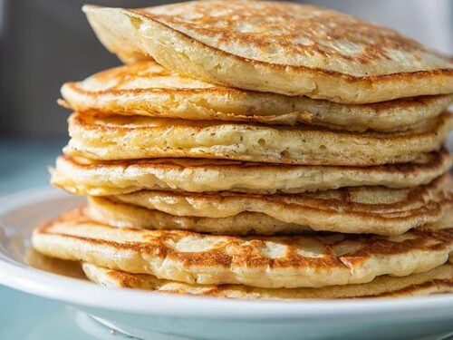

Pancakes

These pancakes use an interesting buttermilk alternative - vinegar and milk. I promise, you can't taste the vinegar.

These pancakes use an interesting buttermilk alternative - vinegar and milk. I promise, you can't taste the vinegar.